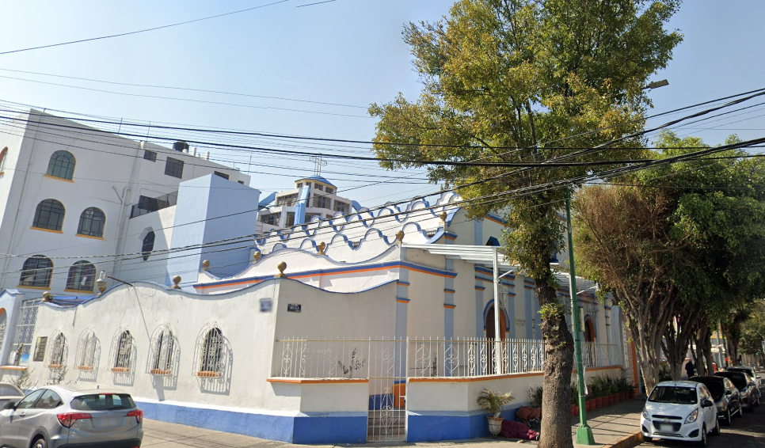
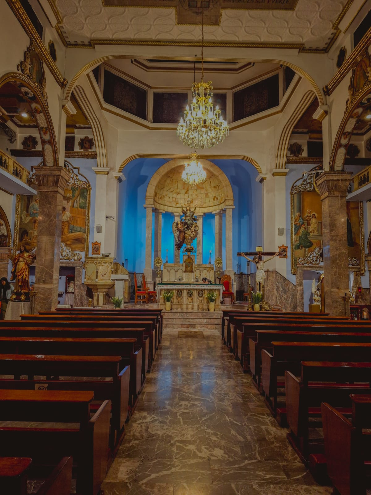
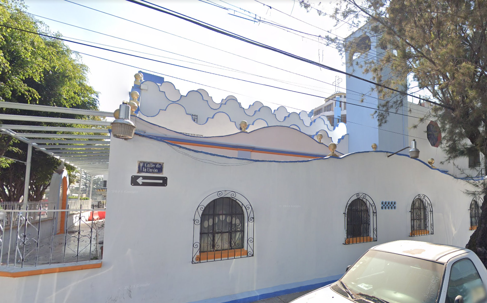

Parroquia Asunción de María
Industrial, Gustavo A. Madero, Ciudad de México
Industrial, Gustavo A. Madero, Ciudad de México
¡Bienvenidos, hermanos y hermanas de la Parroquia de la Asunción de María Tepalcatitlán! Aquí les compartimos, con el cariño de nuestra comunidad, una cálida presentación de “nuestra casita espiritual” en la Colonia Industrial:
Somos una comunidad con raíces en el antiguo pueblo de Tepalcatitlán. Aquí, donde hace siglos hubo una capilla dedicada a Santa María, hoy se alza nuestra parroquia, testigo vivo de la historia y la fe que nos une.
Orgullosamente animamos la vida parroquia con actividades para todas las edades:
- Semana Santa: Representaciones vivientes de la Última Cena gracias a los “Evangelizadores Escénicos”.
- Octubre: Rosario misionero viviente en comunidad donde se pide por los continentes.
- Noviembre: Ofrendas y concursos que fortalecen la fraternidad entre los grupos.
- Diciembre: Posadas y pastorelas llenas de alegría y mensaje navideño.
- Formación permanente: Cursos bíblicos, litúrgicos y talleres que nutren nuestra fe y conocimiento.
Desde este espacio abierto y vivo, te invitamos a unirte a nuestra misión: participar en nuestras celebraciones, actividades y proyectos. Aquí, cada historia cuenta, cada voz suma y cada corazón encuentra un lugar.
Nos encontramos en Av. Necaxa 100, Colonia Industrial, Gustavo A. Madero, CDMX, C.P. 07800
Teléfono: 55 5557 4812
Que nuestra Madre, Asunta al Cielo, continúe protegiendo y guiando a nuestra comunidad. Amén.


